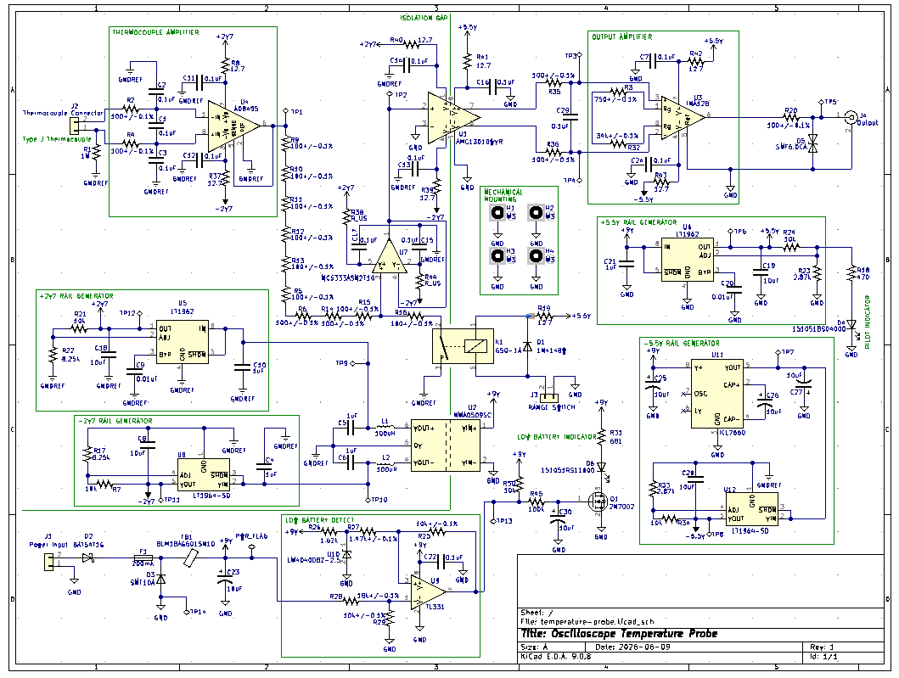
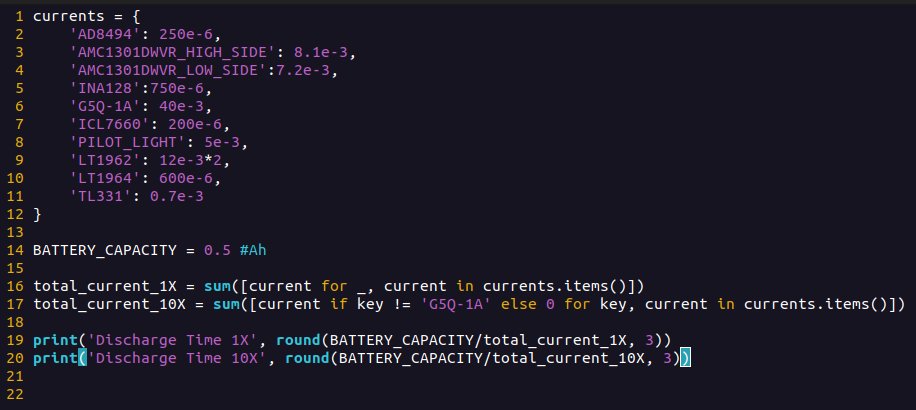
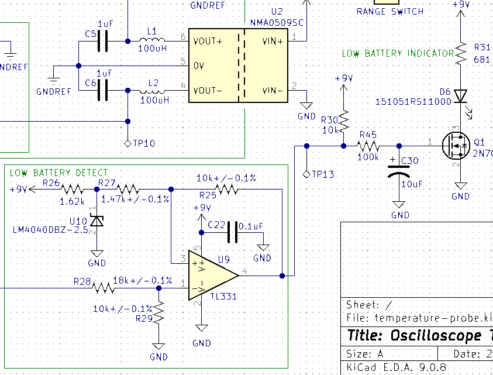
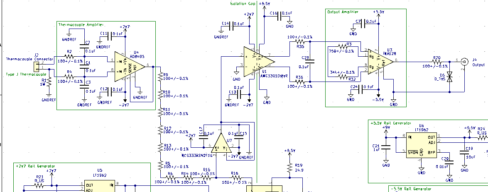
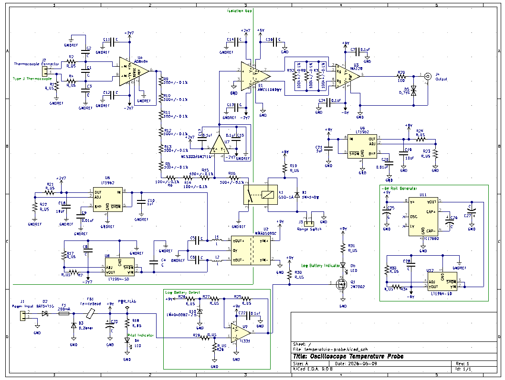

Description
Details
This project is still in its very early stages. Currently the first version is being designed, and I have done some early experiments with ice bath and boiling bath with another thermocouple amplifier instrument I have (Omega 2175A).
One thing under consideration is the thermal inertia of the thermocouple itself. We are using this with an oscilloscope, we want the response time to be as fast as possible. The thermal inertia of the thermocouple needs to be as low as possible. In order to achieve this an exposed junction type thermocouple must be used. We don't want a conduction path between our thermocouple junction and our scope, however. This means that the actual sensing circuit must be isolated. This will pose a significant complication in the circuit design.
Schematic

The schematic for the first revision is complete. Of course, there might be serious issues with this design as it has not been built yet. See the logs for more info, but the key details are the 1X and 10X ranges and the isolation gap.Project Logs
I would like to use a 9V battery to power the probe. The circuit is actually going to drink quite a bit of current, however. Particularly when it's in 10X mode:

This results in:
5-10 hours operating time should be fine though. Maybe in the future an option for an auxiliary power supply will be added so the probe can be used for very long time scale logging.
There is also a low battery detection circuit:
This circuit triggers a low battery indicator when the 9V battery reaches ~6.5V.
The AD8495 is used with a K type thermal couple. This is gives an output of 5mV/deg C with a +/-2 deg C non linearity error. The AMC1301 has a maximum differential input voltage of +/-0.25V, so without the 10X division this means a maximum temperature of 50 deg C, and a maximum temperature of 500 deg C with the 10X division. The NCS333ASN2T1G buffer is needed, because the AMC1301 has an input bias current of -30uA. This would give a voltage offset of -27mV without the buffer. The NCS333ASN2T1G has an input bias current of 400pA and an offset voltage of up to 10uV. The input bias current generates a negligible offset. The offset voltage will add a 0.002 deg C error with 1X division and a 0.2 deg C error with 10X division. The AMC1301 has a gain of 8.2 with an error of +/-0.05%. The INA128 gain is then set to 2.439, so the final output is 0.1V/(deg C) or 0.01V/(deg C). The INA128 has an output offset voltage of 243.9uV.
Let's see if we can add up all these errors. Basically we have +/-2.2 deg C or +/-2.002 with 10X division plus +/-0.05% gain error. Plus another 0.0024 deg C or 0.024 deg C from the INA128 offset voltage. This does not include errors from resistor tolerance.
As for noise, we have 32nV/sqrt(Hz) from AD8495 times a full system gain of 2000 is 64uV/sqrt(Hz). We then have 62nV/sqrt(Hz) from the NCS333ASN2T1G times a gain of 10. so 620nV/sqrt(Hz). Adding these two together we get ~64uV/sqrt(Hz). Multiplying this by this system bandwidth ~10kHz, we get an output noise of 6.4mVrms. This corresponds to about 0.2 deg C of noise in 1X mode and about 2 deg C of noise in 10X mode. This might turn out looking like a lot of noise, but the bandwidth can always be lowered to reduce it.
No doubt a lot of this is wrong, as I probably did some incorrect math in there somewhere. But hopefully it's a good order of magnitude estimate.
I have made some progress on the schematic. Most of the components are down, but I have not calculated many of the values yet. As you can see, we are just using the AD8494 thermocouple amplifier combined with the AMC11000 for isolation. There is also a selectable division so the output can go to either 50 deg C full scale or 500 deg C full scale. This corresponds to 0.1V/(deg C) or 0.01V/(deg C) respectively. Other than that there are just a bunch of linear regulators to generate different power rails, and a low battery detection circuit.
